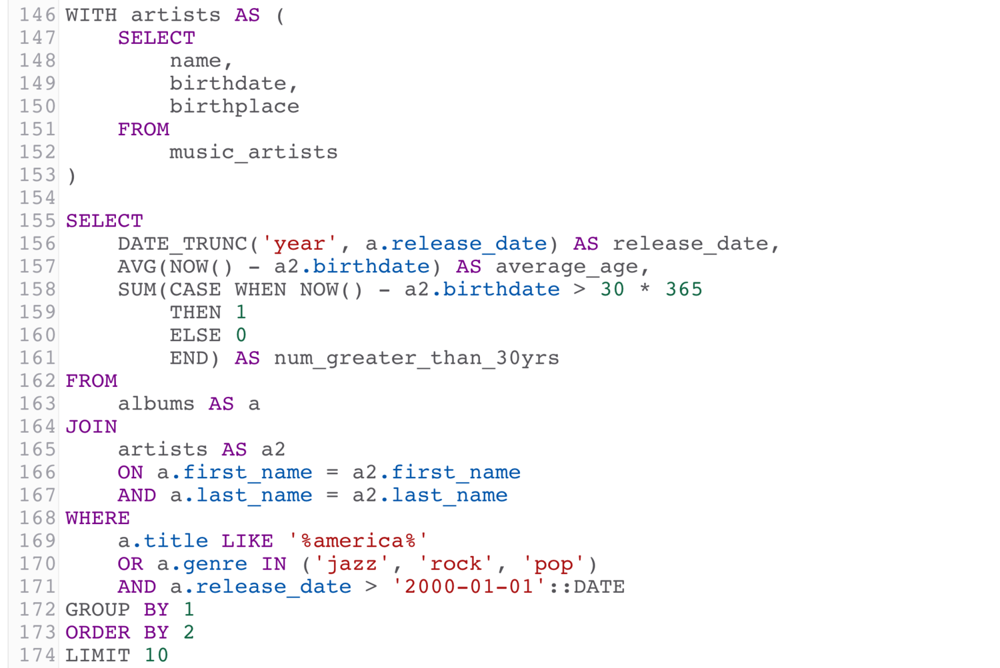

Informatica
Dalla progettazione al web: il ciclo completo dello sviluppo software

1. Progettazione del database
Dall'analisi alla realizzazione
Il percorso di sviluppo inizia con un'attenta progettazione del database, fase fondamentale per garantire scalabilità e performance:
- Schema ER (Entità-Relazioni): Rappresentazione grafica delle entità e delle loro relazioni
- Modello logico: Traduzione dello schema ER in tabelle, attributi e chiavi
- Normalizzazione: Processo per eliminare ridondanze e anomalie nei dati
2. Implementazione con SQL
Interrogazioni avanzate
Abbiamo approfondito il linguaggio SQL con:
- Query complesse: JOIN tra tabelle, query annidate, funzioni di aggregazione
- Ottimizzazione: Uso appropriato degli indici per migliorare le performance
Sicurezza: prevenzione SQL Injection
Particolare attenzione è stata dedicata alle tecniche di sicurezza:
"SELECT * FROM utenti WHERE username = ? AND password = ?"
3. Architettura web e API

Web Service e comunicazione client-server
Lo studio delle API RESTful ci ha permesso di comprendere:
| Componente | Funzione | Esempio |
|---|---|---|
| Endpoint | Punto di accesso alle risorse | /api/prodotti |
| Metodi HTTP | Operazioni CRUD | GET, POST, PUT, DELETE |
| JSON | Formato scambio dati | {"id":1,"nome":"Prodotto"} |
4. Frontend e integrazione
HTML5/CSS3
Struttura semantica e design responsive per ogni dispositivo
JavaScript
Fetch API per comunicare con il backend e gestire i dati JSON
Conclusione: un percorso completo
Questo percorso ci ha permesso di comprendere l'intero ciclo di vita dello sviluppo software, dall'idea astratta alla realizzazione concreta. Abbiamo acquisito competenze trasversali che spaziano dalla progettazione del database alla sicurezza informatica, dall'implementazione del backend alla creazione di interfacce utente moderne.
La capacità di integrare queste tecnologie in un unico flusso di lavoro ci permette di affrontare progetti complessi con approccio professionale, ponendo sempre attenzione a qualità del codice, sicurezza e user experience. Queste competenze rappresentano una solida base per il mondo del lavoro digitale, sempre più orientato verso soluzioni web-based e sistemi distribuiti.